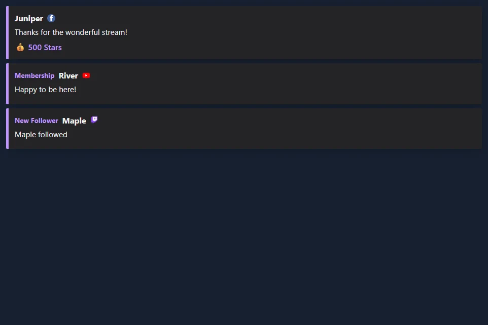

Keep the last three alerts visible
- Open Multi-Stream Alert Box → Multiple alerts / Event list.
- Choose Last three — transparent. This enables stacking, compact cards and Keep alerts until replaced. Change Visible alerts for a different count.
- Choose Preview sample events to see fictional Twitch, YouTube and Facebook events. This preview does not connect to your stream.
- Copy the Multi-Stream Alert Box link. In OBS Studio or Streamlabs Desktop, add a Browser Source to your scene and paste the link. Start with a 900 × 700 canvas and resize it to fit your cards.
- Connect your event sources in SSN. New events join the stack and replace its oldest unpinned card.

Open a sample stack · Browse stacked alert styles
Turn off Keep alerts until replaced to let each card expire after the configured display duration. Stacking displays eligible arrivals immediately; the single-alert queue applies when stacking is off. Sound plays on new alerts. Persistent video plays once, and the media area hides after the display duration while the text stays visible.
Use a compact audience event list
Open Activity Feed / Events and choose Last three — transparent. The audience preset hides the heading, timestamps, metadata, click-to-feature, counts, ad notices and casual activity. It keeps follows, subscriptions, paid support and other selected event categories. Turn the preset off if you want to customize its hidden items individually.


Use Choose which events appear to filter categories, and Sources to Monitor to filter platforms. Set Remove events after to zero or leave it empty to retain rows until replaced. Preview an audience list.
Choose a style and layout
Browse all event-list styles. Each gallery card has a screenshot and a link using your session. Multi-Alerts supports its existing artwork and alert themes in stacks, plus Broadcast, Outlined, Rounded pills and Neon treatments.
| Layout | Use it for |
|---|---|
| List | Several recent events, newest at the top or bottom. |
| Horizontal cards | A row across a scene. Set row width to fit the available space. |
| Rotating event | One visible event at a time, cycling through the retained events. |
| Latest by category | The newest event in each category. Increase the visible limit to include more categories. |
| Scrolling strip | A moving strip of retained events. Scrolling cycle controls its speed. |
Adjust text alignment, wrapping, row width, spacing, background opacity and accent colors. Background opacity replaces a card's gradient with a solid translucent background. Entry animation can use the style default, slide, fade or none. Exit animation can fade or slide a departing card. Reduced-motion preferences disable motion.
Build a classic stream bar
Three overlays combine into a familiar stream layout: a fundraising bar along the top, recent events in a corner and running totals along the bottom. Each one is its own Browser Source, so you can use any of them alone.
| Piece | Where to turn it on | What it shows |
|---|---|---|
| Fundraiser Banner | Tip Jar and Goal Meter: set Display Style to Fundraiser Banner. | A flat bar with the goal title, amount raised and goal on one line. Size the source to about 900 × 40. Preview |
| Spotlight event list | Activity Feed / Events: set Feed style to Spotlight. | One-line rows that hug the right edge, with the newest event highlighted. It needs no other settings and shows the last three events. Preview |
| Stream stats strip | Meta Data Bar: open Stream stats, choose Stats to show, then set Style preset to Strip. | The biggest donation, subs today, bits and the time, with an optional latest chat line. Size the source to your canvas width and about 42 tall. Preview |
The strip counts donations, subs, bits and follows from the events it receives while it is running, so it does not include anything from before it was added to your scene. Stats, counters and the subathon use the dock feed. To count subscription and follow events, leave Exclude alert events from dock off. Totals are saved in the browser showing it and survive a refresh. They clear at midnight, or set Reset totals to Only with the reset button and use Reset stream stats in the popup. A gifted sub counts once for each sub in the gift, and resubs count as subs. Biggest donation compares USD values and shows the amount as the viewer sent it, so large Bits cheers can take the top spot. Test events you send count too, so reset before going live.
Rename a stat from the popup, for example biggestlabel=Biggest D. Use stats=biggest,donations,subs,bits,follows,lastchat,clock in any order to choose what appears. In Spotlight, textalign=left moves the rows to the left, cardbg and accent set the highlight colors, and textcolor sets the older rows. On the banner, fillstart, trackcolor, bartextcolor, barheight and bartextsize change its look.
Show the latest and top supporters
The Meta Data Bar's Stats to show also has presets for the labels you see on many channels: the latest follower, sub, tip and Bits, the top gifter and top Bits of the day, and your total subs and followers. Each one fills in from events as they arrive. Before the first event, a label shows a dash.
To choose your own set, edit stats= in the link: latestfollow, latestsub, latesttip, latestbits, latestraid, topgifter, topbits, totalsubs and totalfollows work alongside the keys above, and latestfollowlabel=Newest renames one. Latest values and totals carry over midnight; the top lists start again each day. Total subs and followers need a source that reports them, such as Twitch EventSub. Preview
Count deaths, wins or anything else
In the Meta Data Bar, list each counter as Name|!command, separated by commas, for example Deaths|!death,Wins|!win. Moderators, the host and admins change them from chat. On YouTube, your own channel is not marked as a moderator, so add your name under "Identify the hosts' name" in SSN. Anyone else's message is ignored unless you turn on Allow viewer adds. That lets each viewer add 1 every five seconds; only moderators can set or reset a count.
| Type this | What happens |
|---|---|
!death | Adds one. |
!death +3 or !death -1 | Adds or removes that many. |
!death =10 | Sets the count. |
!death reset | Back to zero. |
Add rules to let support raise a counter on its own. Owed Pushups|!pushup|sub:15|gift:15 adds 15 for each sub and each gifted sub. You can also use bits (per 100 Bits), tip (per $1) and follow. Counters are saved in the browser showing them and only reset when you ask, and Reset stream stats leaves them alone. Preview
Stack several goals in one source
Add goal: to a counter and it shows progress such as 3/25 with a bar. List a few and set Layout to Column to get a goal panel: Sub Goal|!subgoal|sub:1|goal:25,Bits Goal|!bitsgoal|bits:100|goal:20000,Follower Goal|!followgoal|follow:1|goal:150,New Mic|!mic|tip:1|goal:200. Add daily:1 for a daily goal that starts over at midnight. A goal with only a tip rule shows dollars. Mods can correct one in chat, such as !subgoal =12. For a single large goal with animated styles, use Tip Jar and Goal Meter instead. Preview
Run a subathon timer
In the Meta Data Bar, set a Starting time such as 6h, then the minutes each sub, 100 Bits, $1, follow and raid adds. For tiers, list three values: 6,15,40. Turn on Show rules to display them, and set a longest time to limit what support can add. Moderators can still go past it. Time for follows can be farmed by unfollowing and refollowing, so leave that at 0 unless you trust your chat. The Cards style gives a large clock.
The clock waits for you. Press Start in the popup, or have a moderator type !subathon start. Moderators can also use pause, add 30m, remove 10m, set 6h and reset. On YouTube, your own channel is not marked as a moderator, so use the popup buttons or add your name under "Identify the hosts' name" in SSN. It keeps running through a refresh, and Reset stream stats does not touch it. Once it reaches zero, new support no longer extends it, but a moderator can use add to bring it back. Support only adds time while the overlay is open, so keep the source active during the event. Preview
History and controls
Enable Remember visible events after refresh to keep the board populated when its Browser Source reloads. History is local to that browser, session and board name; OBS and your ordinary browser have separate storage. The retention setting ranges from 1 to 168 hours. Restored rows use the current filters and do not replay sound or trigger automation. In Multi-Alerts this option requires stacking.
Give separate scenes different Board names. Popup commands target the corresponding board name and surface. Commands sent to a disconnected overlay are not a saved state change. Pause holds new arrivals in a buffer of up to 500 events for stacks and feeds; resume displays them. If that buffer fills, its oldest waiting event is replaced. The single-alert mode uses its configured queue limit.
Pin toggles the newest card's pin; pinned cards occupy visible slots. If every slot is pinned, unpin a card to admit new events. Remove removes the newest card. Clear removes visible events, waiting events and that board's saved history. Multi-Alerts also offers skip, mute, unmute and replay. Replay is a display action, not a new donation or Event Flow trigger.
For a private Events dashboard, enable Show operator buttons to pin or remove individual rows. Leave this option off in audience Browser Sources.
Connect the events you want to show
Both overlays use the events your SSN sources deliver. An overlay style does not add platform permissions or a new event subscription.
| Source | Setup and event coverage |
|---|---|
| Twitch | Use Twitch EventSub for follows, subscriptions, gifts, cheers and raids where your account has access. Chat-only capture does not replace EventSub. |
| Standard Facebook capture can turn visible Stars donations into paid-support rows. Facebook API chat capture does not supply Stars amounts. For follows and supporter subscriptions, use an event provider that delivers those notices to SSN; Facebook chat capture alone does not supply them. | |
| YouTube | Memberships, gifts, Super Chats, Super Stickers and Jewels depend on the chosen capture mode. Public subscriber notices require their API path. See event compatibility. |
| Kick and TikTok | Use the available event-capable source for follows, subscriptions or gifts. Select the event categories you want to show; likes and joins can be hidden. |
| Streamlabs and StreamElements | SSN can capture existing provider event feeds. Connect the provider in SSN and keep its source active. Available events depend on the provider connection and source mode. You can use SSN's display while retaining a provider for events or tips. |
| Other SSN sources | Donation amounts and recognized follow, membership, gift and raid events can use the same displays. See the event reference for source-specific fields and supported actions. |
If a real event is missing, first check whether it appears in SSN's Activity Feed. Check the source connection and event permissions if absent; check overlay filters and minimum amounts if present.
Coming from Streamlabs or StreamElements
For the Streamlabs Event List's always-visible behavior, use Show multiple alerts + Keep alerts until replaced in Multi-Alerts, or the audience preset in Events. Visible alerts / Maximum events sets the count. The history option restores recent visible cards in the same browser. Use category filters and minimum-value controls to choose which support appears.
You can add SSN's link directly as a Browser Source in OBS or Streamlabs Desktop. It does not require an SSN operator dock. Use an SSN style from the gallery, then adjust colors and spacing to fit your scene.